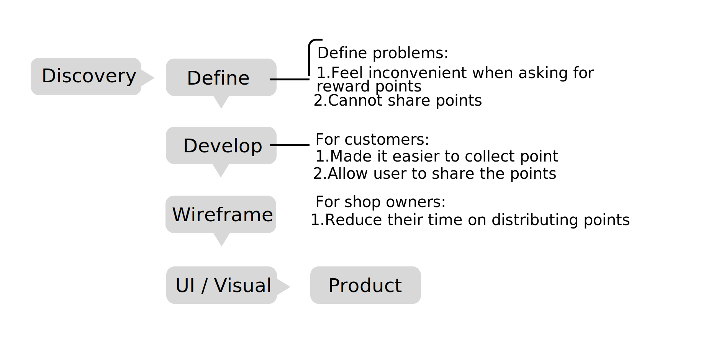
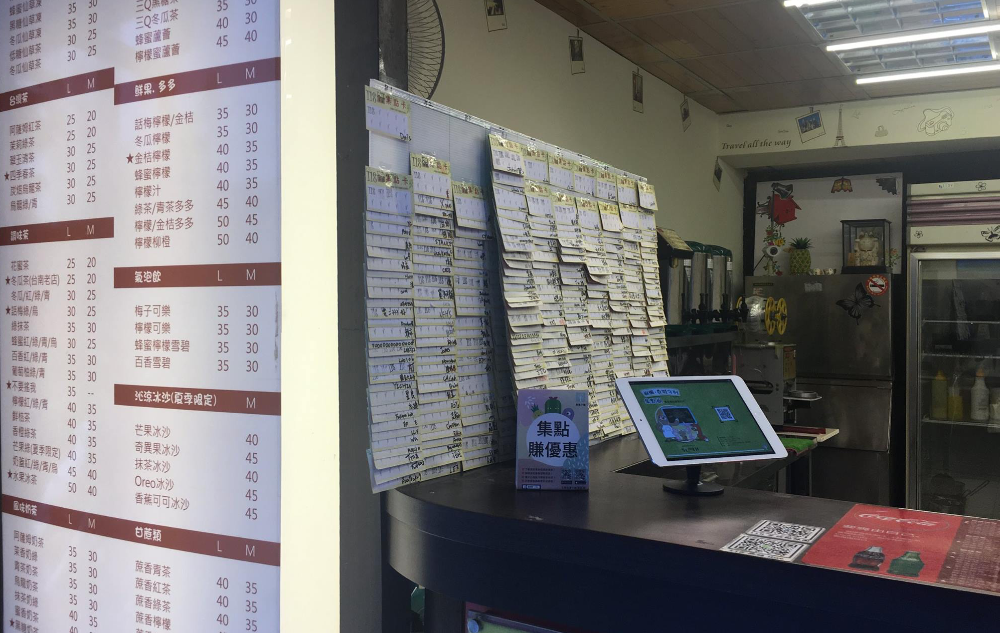
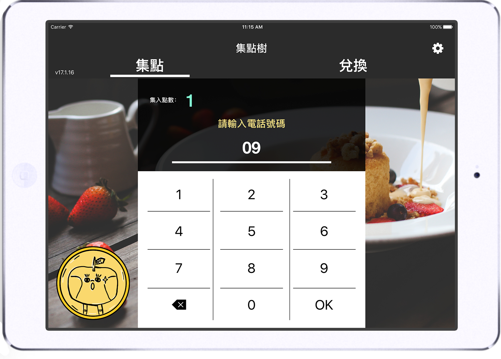

PointTree
PointTree app turns practical reward cards into digital cards. In Taiwan, many stores provide reward cards for customers. As long as customers reach certain amount of reward points, they can redeem the reward points for certain products. PointTree aims to reduce physical reward cards which increase waste of paper.PointTree produces a digital way of collecting points which fits a variety of stores.
Role: Product Designer
Type: Mobile App
Year: 2016



Type: Mobile App
Year: 2016
How to stand out from existing point apps?
What's the difference between PointTree and other point apps?To stores:
PointTree requires only an iPad for each store; however, most point service needs not only an iPad device, but also a stamp-like device to scan the iPad.
PointTree also provide a "promotion game" in the app.
To customers:
PointTree allows customers to give their own points to their friends. It is hard to collect points alone, but PointTree users collect points together.
Challenges : retain users
In the original PointTree apps, only when users wants to redeem the reward points, they will open the app. We tend to retain users and attract them to open the app. Therefore, we create Mascots. As long as user receives one point, the Mascots will grow up.User Story： When users receive a notification on their mobile device, they will open the app to see "what's the next level of Mascot".
Discovery：problem with store app user interface
A boba tea owner reported to us that some customers couldn't enter their phone number in the first place. Thus, we went to the boba tea store and sit inside the store to see users' action.Our store app automatically input "09", so users only need to enter the rest of the numbers. However, we found that common people enter their phone numbers with all numbers, like "09xx-xxx-xxx". Thus, error occurs whenever they do not notice "09" has already been inputted.
Result： Now, if users enter the full 10 numbers, the first two numbers "09" will be ignored automatically.
We wanted to delete the first two numbers of a mobile number, which are 0 and 9, at first; however, the "09" is to indicate a mobile number should be typed in the column. Therefore, we kept "09" eventually.
Promotion game prototype